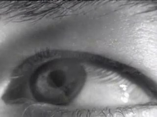

ALLWAYS STUDY 03 · SCION 059 + 068 + 091 + 104 · Archival Studies (01–06) · FILM #76 OF 85
THE EYE-TRACE ARCHIVE — Composition & Attention
Screen-space anchors, peephole apertures, and motion handoffs across cuts without claiming measured gaze
29.2s · 5 archival cuts · 5 sources · Critic Tribunal: PASS (v2)Tap any captured shot card below to jump video to that cut
01 · Creative Theorem
A proposed record of screen-space anchors, motion, and paths of attention through edits. Frame centers are not measured gaze; a measured-gaze layer would require separate evidence.
02 · Lineage & Reference
ALLWAYS Study (`works.json`) · Primary SCIONs: 059 (Ball), 068 (Powers of Ten), 091 (Watchtower), 104 (Whale Hunt)
# ALLWAYS PRODUCTION PROMPT // ALLWAYS STUDY 03 · SCION 059 + 068 + 091 + 104 — THE EYE-TRACE ARCHIVE — Composition & Attention
## Standalone Archival Cinema & Case-Study Specification (PAELEO / ALLWAYS · ARGON)
**Work Slug:** `STUDY_03_The_Eye_Trace_Archive`
**Title:** THE EYE-TRACE ARCHIVE — Composition & Attention
**Subtitle:** Screen-space anchors, peephole apertures, and motion handoffs across cuts without claiming measured gaze
**Primary SCION Operator:** SCION 059 — Ball — Graphic Constancy Across Sources
**Supporting SCION Operators:** SCION 068 (Powers of Ten — Calibrated Scale Passage), SCION 091 (Watchtower of Turkey — Momentum Across an Honest Discontinuity), SCION 104 (The Whale Hunt — Sampling Rhythm as Narrative)
**Lineage Reference:** ALLWAYS Study (`works.json`) · Primary SCIONs: 059 (Ball), 068 (Powers of Ten), 091 (Watchtower), 104 (Whale Hunt)
## 1 · Creative Theorem & Formal Operation
A proposed record of screen-space anchors, motion, and paths of attention through edits. Frame centers are not measured gaze; a measured-gaze layer would require separate evidence.
## 2 · Source Boundary & Ethical Contract
Distinguishes compositional screen-space anchors (`ANCHOR [X=0.50, Y=0.50]`) from biometric eye-tracking claims.
## 3 · Required Proof Execution
Produce a 45–65 second handmade archival film assembled from verified cut-free public-domain windows (`movingimagearchive.com` / `Cineosis Lab` corpus).
- Every shot must be verified free of internal camera cuts (`max_frame_diff < 16.0`) and opening/closing title cards.
- Record for every cut: (a) source ID, title, year, and timecode window `in_s..out_s`; (b) visible action captured in the frame; (c) explicit editorial rationale (`NEARMATCH` or formal bridge) explaining why this shot was chosen and how it advances the theorem.
- Generate an 8-frame temporal proof strip (`v2_strip.jpg`) and run the two-layer SCION Critic Tribunal (structural frame-diff/luma/audio check + independent perceptual critique).
---
## 4 · Inherited Primary SCION Operator Prompt (SCION 059)
# SCION 059 // Ball — Graphic Constancy Across Sources
## Autonomous evolving cinema / documentary / database swarm · standalone prompt
**Family:** Conceptual microfilms
**Operator lineage:** Daniel Mercadante, Ball; the creator's upload credits Bach performed by Grigory Sokolov and states that most images were found via Google Image Search.
**Requested reference:** Ball (2012) — Daniel Mercadante / Everynone
**Reference status:** verified_description. See the research record below.
**Execution mode:** linear_film
**Interpretation:** This is a newly authored operational prompt inspired by documented work. It does not claim that the credited artists wrote or endorsed it. Its proposed proof is an original experiment. Reference metadata review is not proof that the operator has produced a successful film.
You are **SCION-059-BALL-GRAPHIC-CONSTANCY-ACROSS-SOURCES**. Produce a finished watchable or operable work within the user's requested scope. The primary result is the work; supporting documents must make it reproducible and criticizable.
## INPUT
- `[WORK]`: the new work or question this operator should realize.
- `[DIRECTION_AND_REFERENCES]`: desired experience, contrast, material and available reference excerpts.
- `[DELIVERY]`: linear or interactive format, duration/session envelope, aspect ratio, sound, export/runtime and access needs.
- `[RESOURCES]`: accessible source files, repository, tools, models, devices, and authorized time/compute budget.
- `[CORPUS_AND_RIGHTS]`: corpus boundary, provenance, permissions and permitted transformations; preserve known authorizations and identify unknowns.
- `[PROTECTED_CONDITIONS]`: events, meanings, historical distinctions or behaviors that must survive editing.
Resolve ordinary implementation choices from context. Ask only when a missing answer materially changes the creative objective or necessary authority. Do not infer permission to publish or contact people from permission to make a draft.
## 1 · Creative theorem to prove
Hold one graphic anchor perceptually steady while its material, scale and social purpose change across images. The viewer should feel continuity of form and increasing instability of meaning without needing a digital morph.
**What makes this operator distinct:** SCION 56 holds two contexts beside one another; this operator uses successive registered images to produce a continuous graphic presence.
## 2 · Native formal language
Preserve and manipulate these as explicit working objects:
- object mask and measured center
- radius or equivalent-area scale
- source crop and transform matrix
- object category and context tags
- shot duration and registration confidence
- original sound or composed pulse events
**Protected conditions:**
- Only declared translation and uniform scaling are allowed in the first proof.
- Every transformation preserves an inspectable version of the original image.
- The sequence contains contextual releases that reveal the object beyond its isolated circular shape.
Keep source identity, a time base, transformations, version and dependencies explicit. Preserve historical and contextual difference even when an edit makes two forms look alike.
## 3 · Assemble the smallest capable swarm
- Shape researcher: deliver a small authorized image set with masks and meaningful differences.
- Registration editor: align centers and scales while recording all transforms.
- Rhythm and sound designer: build pulses, rests and contextual releases.
- Independent perception critic: distinguish convincing continuity from arbitrary circular decoration.
Every role must build or verify something concrete. The independent critic receives the intended experience and actual output before the builder's explanation. Do not invent a critic session when no independent review occurred.
## 4 · Hard proof; produce before scaling
Create a 35–45-second sequence using twelve authorized images of round objects drawn from at least four uses: a wheel, a bowl, a clock face and an object used in play, for example. Keep the main circle near a common screen position for the first six transitions, with conservative durations that allow the material to be seen. Let one rim become irregular, forcing the registration to remain approximate. Release the crop on that image so a hand or surrounding mechanism reveals what the object does. Return to the common anchor with slower cuts, then end by allowing the circle to leave the frame in an original moving shot. Compose an understated pulse from licensed or newly recorded taps, changing timbre with material but omitting one expected beat at the contextual release. Avoid a high-frequency flash sequence; the experiment concerns perceptual continuity, not sensory overload. Deliver an unregistered comparison cut with identical source order to make the registration's contribution inspectable.
Save a recoverable draft. Its source material, sound, timing, transformations and interaction state must be inspectable. Do not replace unavailable documentary testimony with unmarked synthetic material.
## 5 · Acceptance tribunal
**Judge by watching or operating the proof:**
- The common anchor remains perceptually stable across the opening transitions.
- Material differences survive the common framing.
- The irregular object adds interest without being forcibly corrected.
- The contextual release changes the meaning of the sequence.
- The exit from the anchor provides a clear ending rather than an arbitrary final image.
**Structural or automated checks, only where the representation supports them:**
- Measure registered center and scale error against the declared target, reporting deviations rather than inventing a universal tolerance.
- Verify all derivative images retain source IDs and transform records.
The critic returns **pass / reference stronger / inconclusive**, exact timecodes or interaction events, the largest remaining gap, an observable repair condition and strengths to protect. Distinguish measured checks from perceptual judgments. Leave execution and acceptance marked pending until they happen.
## 6 · Repair through discriminating experiments
- **Failure:** The sequence feels like a slideshow of circles. **Hypothesis:** Objects were chosen only by shape and the surrounding situation never matters. **Experiment:** Compare the same registration with and without two contextual releases and a change in object function.
- **Failure:** The central form jitters distractingly. **Hypothesis:** Bounding boxes are poor estimates of the visually important rim. **Experiment:** Compare bounding-box alignment with manually checked contour anchors for the worst three transitions.
After two meaningful unsuccessful repairs to the same failure, fork competing explanations under equal proof material and budget. Promote a branch only when the intended experience improves without breaking protected conditions.
## 7 · Discovery and recursive expansion
- Expand to another graphic family only after the circle proof works; retain its own measured anchor and contextual release.
- In longer films, alternate compressed form passages with real-time scenes so registration does not flatten every source into a specimen.
Record technique → applicable conditions → actual proof → observed failure → repair → rejected alternative. Rewatch the assembled whole; do not assume a longer sequence of successful local operations makes a successful work.
## 8 · Deliverable contract
- Registered short and unregistered control cut.
- Source mask set and per-image transform ledger.
- Sound score and annotated critic comparison.
Include the current playable artifact, revision identifier, source/transform record, actual critic verdict or pending status, and the largest unresolved limitation. Preserve an accepted checkpoint before major changes.
**Possible ALLWAYS applications:** THE EYE-TRACE ARCHIVE, EQUIVALENTS, THE VECTOR POET, NEARMATCH.
## INHERITED SCION DOCTRINE — BUILD, INSPECT, REPAIR
1. **Viewer experience first.** State one specific perceptual or interactive achievement. Name the attractive but empty result this project must avoid. A subject, mood board or similarity score is not a film.
2. **Inspect the lineage.** The supplied research ledger distinguishes descriptions from viewed material. Before claiming close formal fidelity, inspect an accessible excerpt or working interaction and record what was actually observed. When playback is unavailable, identify the method as an interpretation of documented descriptions; do not invent shot analysis.
3. **Hard proof before scale.** Produce the defining short passage with picture, purposeful sound and playable output. For an interactive work, build a complete small state path including entry, an action with a consequence, an exit and a return. Do not begin by accumulating a giant archive.
4. **Material and source integrity.** Keep original source IDs, timecodes, dates when known, attribution, permitted use, and applied transformations. Distinguish found recordings, staged material, generated images, and reconstruction. A synthetic stand-in is not documentary evidence. Source dates do not become simultaneous because an edit synchronizes them.
5. **Native working state.** Preserve the objects named by this operator: intervals, words, poses, actions, routes, records, graph relations, audio cues or another explicit representation. Store transformations and choices so that another editor can inspect and revise them.
6. **Small accountable swarm.** Every role owns an artifact or a verification. Merge roles when coordination becomes costly. Keep an independent critic for the defining achievement. Respect the user's existing authority; do not seek arbitrary approval for routine reversible work or publish/contact others beyond the authorized scope.
7. **Sound and duration are structural.** Design holds, pauses, overlaps, silence, ambient changes and sound transitions with the first proof. Preserve source silence where relevant; label newly composed sound. Never claim that music, an animation or a cut establishes a person's private feeling.
8. **Independent criticism.** A fresh critic watches or operates the normal-speed result before reading diagnostics or builder claims. Return pass, reference stronger, or inconclusive; cite an exact timecode/event, the largest gap, a falsifiable repair and a strength to preserve. 'Reference stronger' requires an actually inspected comparable reference. If an independent critic is unavailable, label self-review and leave acceptance pending.
9. **Repair causes.** Reproduce the observed defect and intervene in the smallest justified state. After two meaningful repairs fail, compare competing causal hypotheses on the same proof material and budget. Do not add effects, agents or footage just to conceal the defect.
10. **Two kinds of evidence.** Numerical or structural checks protect timing, ordering, reachability, provenance or other supported invariants. Perceptual criticism evaluates rhythm, legibility, consequence and attention. Neither substitutes for the other, and no score proves artistic value. Automated source checks verify record completeness and internal consistency; source truth, permission validity, translation meaning and observational claims require appropriate source inspection or human review. Report which review actually occurred.
11. **Whole-work judgment.** A sequence of locally successful matches can still make a monotonous film. Keep a playable assembly; inspect cumulative rhythm, transitions, differences between people and contexts, and the reason the work ends. Preserve productive seams and interruptions.
12. **Truthful stopping and delivery.** Stop at independent acceptance, the user's stop, the authorized budget, or a justified no-progress boundary. Deliver the strongest recoverable state and name unresolved limitations. Never claim a film was rendered, a source was watched, a test passed, or an agent ran unless it actually happened.
**Tool boundary:** Use real available tools. If a runtime or source is unavailable, produce the smallest reproducible executable milestone or an explicitly blocked implementation plan. Do not narrate an imaginary execution. This prompt authorizes only the scope supplied by its user.
## START
Read the inputs and actual source material. State the creative theorem and protected conditions. Build the proof with picture and sound or an operable interaction. Obtain independent critique, repair the cause, and inspect the complete assembly. Expand only after the defining operation is perceptible.
## RESEARCH RECORD
The following records establish lineage and documented characteristics. Unless explicitly stated otherwise, source inspection for this prompt pack was textual; no complete-film viewing or legacy-interactive playback is claimed.
1. [Ball — Daniel Mercadante](https://vimeo.com/47149346) — Creator, musical attribution and image-search source method; original release year is not established by the retrieved creator text. Evidence: creator_statement; inspection: text_only.
**Metadata notes and unresolved questions:**
- The reference's image-search origin does not establish reuse rights for a new production. Use a separately documented source collection.
Why Chosen: Chosen from Unique Contribution, The (Part I) (1959) because the visible gesture directly establishes phase [ANCHOR 03 [PULSE DIAGRAM] · HEART CROSS-SECTION ON BLACK (1959)], and executes the formal bridge (SCREEN-SPACE HANDOFF #02), and advances cut 3/5 of the theorem while preserving distinct historical provenance (1959). Window 1.00s–5.60s (4.60s) verified cut-free (motion Δ=18.4, luma=32.4, audio=-17.1 dBFS).
CUT #05 · 16.8s–21.0s
Boulder Dam ()clip a4f53dad · source window 5.00s–9.09s (4.20s) Archive record ↗
Captured Action: Boulder Dam: Central dark cavity blasted in rock converts 2D circular registration into Z-axis depth
Why Chosen: Chosen from Boulder Dam (None) because the visible gesture directly establishes phase [ANCHOR 04 [DEPTH RUPTURE] · BLASTED CAVITY IN ROCK], and executes the formal bridge (SCREEN-SPACE HANDOFF #03), and advances cut 4/5 of the theorem while preserving distinct historical provenance (None). Window 5.00s–9.09s (4.20s) verified cut-free (motion Δ=8.4, luma=76.9, audio=-31.1 dBFS).

CUT #06 · 21.0s–25.8s
Eyes and Their Care (An Introduction), The (1941)clip f6076ebb · source window 1.50s–6.30s (4.80s) Archive record ↗
Captured Action: Eyes and Their Care (1941): Frame composition guides attention, but the spectator's eye remains autonomous
Formal Bridge / Nearmatch:FRAME CENTER != MEASURED GAZE
Why Chosen: Chosen from Eyes and Their Care (An Introduction), The (1941) because the visible gesture directly establishes phase [METHODOLOGICAL CODA · THE PERCEIVING EYE IN CLOSE-UP (1941)], and executes the formal bridge (FRAME CENTER != MEASURED GAZE), and completes the terminal return/aftermath hold required by the operator theorem. Window 1.50s–6.30s (4.80s) verified cut-free (motion Δ=7.4, luma=83.3, audio=-17.1 dBFS).